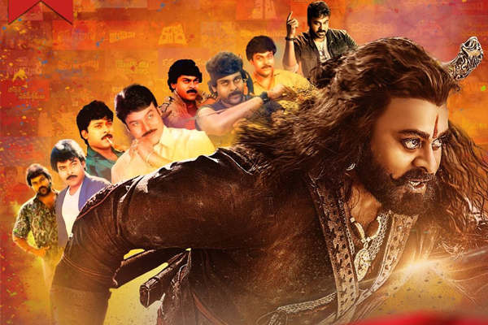
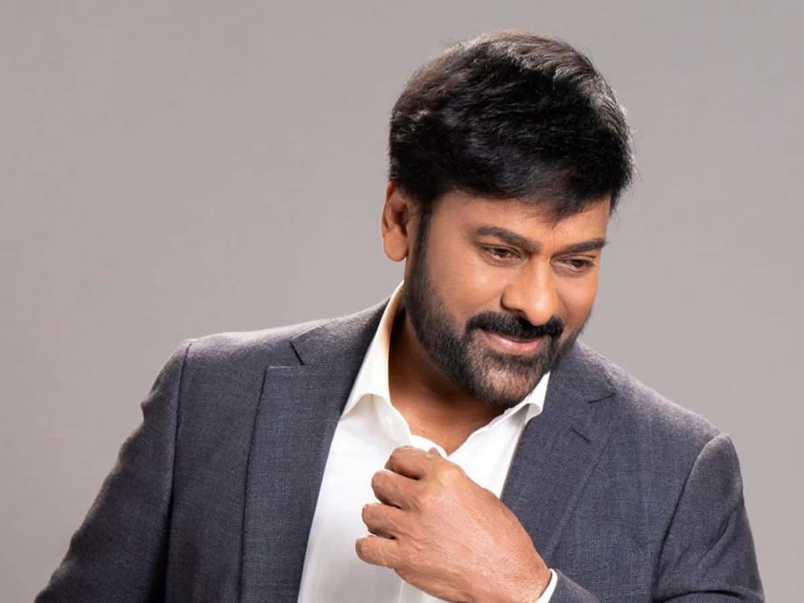
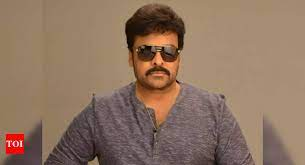
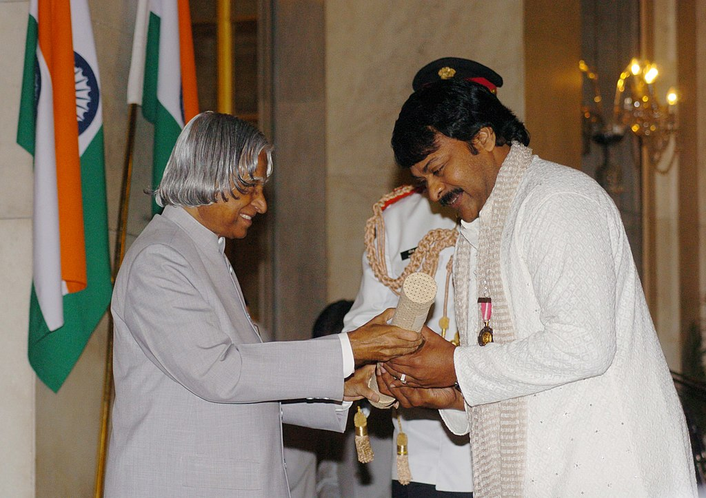

Chiranjeevi is an Indian actor, film producer and former
politician. He is regarded as one of the most successful and
influential actors of Indian cinema.In a career spanning over four
decades, he starred in over 150 feature films predominantly in
Telugu, as well as some films in Hindi, Tamil and Kannada.
Chiranjeevi won the Andhra Pradesh state's highest film award, the
Raghupathi Venkaiah Award, three Nandi Awards, and nine Filmfare
Awards South including the Lifetime Achievement Award. In 2006, he
was honoured with the Padma Bhushan, India's third-highest
civilian award, for his contributions to Indian cinema.In 2013,
CNN-IBN named him as one of "the men who changed the face of the
Indian Cinema".


About
Born:-Chiranjeevi was born on 22 August 1955 in Mogalthur, a village
in West Godavari district of AP Children:-
3 children Parent(s):- Konidela Venkat Rao, Anjana Devi

Education
Sri Y N College (Degree)
Chiranjeevi did his schooling in Nidadavolu, Gurazala, Bapatla,
Ponnur,Mangalagiri & Mogalthur. He did his Intermediate at
C.S.R.Sarma College in Ongole. After graduating with a degree in
commerce from Sri Y N College at Narsapuram.

Awards
2006 - Padma Bhushan
2006 - Honorary doctorate from the Andhra University
2014 - International Face of Indian Cinema
2016 - Raghupathi Venkaiah Award
2022 - IFFI Indian Film Personality of the Year Award
HERE IS WHAT WE NEED TO KNOW ABOUT Megastar Chiranjeevi
On 20 February 1980, Chiranjeevi married Surekha, the daughter
of Telugu comic actor Allu Ramalingaiah.
They have two daughters, Sushmitha and Sreeja, and a son, Ram
Charan, also a lead actor in Telugu cinema.
Chiranjeevi's younger brother, Nagendra Babu, is a film producer
and actor. His youngest brother, Pawan Kalyan, is an
actor-politician who founded Jana Sena, a regional political
party.
Allu Aravind, his brother-in-law, is a film producer.
Chiranjeevi is uncle to the actors Allu Arjun, Allu Sirish,
Varun Tej, Niharika, Sai Dharam Tej, and Panja Vaisshnav Tej.
Chiranjeevi started his film career with Punadhirallu.However,
his first released film was Pranam Khareedu.
Chiranjeevi began to appear in leading roles with films such as
Intlo Ramayya Veedhilo Krishnayya (1982) It brought him his
first Filmfare Award for Best Actor - Telugu
Khaidi was a box office success and Chiranjeevi attained stardom
with this movie.
Chiranjeevi received his first Nandi Award for Best Actor for
Swayamkrushi (1987), directed by K. Viswanath.
Khaidi No. 150, directed by V. V. Vinayak, The movie collected ₹
41.75 crore on its opening day and grossed ₹ 164 crore in its
lifetime.
Chiranjeevi is one of the co-owners of the Indian Super League
club Kerala Blasters FC.